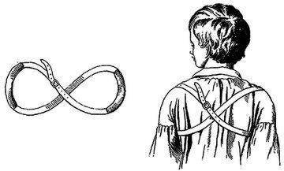

It’s exactly two years since I launched this site and I am saying farewell for now. I’ve really enjoyed running this site, met some terrific individuals with whom I will certainly stay in touch, and learned a lot. But I just don’t have the time to do it any longer. More
What Is Unschooling? Invitation to a Survey Peter Gray, Freedom to Learn, Psychology Today Unschooling is a growing, radical educational movement that deserves attention.
Unschooling is a movement that turns conventional thinking about education upside down. I'd like to learn more about it and tell the world more about it, and for that reason I'm conducting a survey of unschooling families. If you are a member of such a family and are willing to participate, you can download the survey form by going to Pat Farenga's website and scrolling down to find the link (Pat has kindly posted the form).
Here's some of what I know already about unschooling, before conducting the survey. Defined most simply, unschooling is not schooling. Unschoolers do not send their children to school and they do not do at home the kinds of things that are done at school. More specifically, they do not establish a curriculum for their children, they do not require their children to do particular assignments for the purpose of education, and they do not test their children to measure progress. Instead, they allow their children freedom to pursue their own interests and to learn, in their own ways, what they need to know to follow those interests. More
The more I thought about the whole thing the more uneasy I became. At first I had thought nothing of a couple of seven year-olds being curious about each other’s body parts. But then I started thinking about what the inspector had said about how kids who are exposed to certain “situations” at home act those out at school. Frankly, I started getting grossed out. What exactly had gone on between Peter and Katie? What had she suggested to him? Even, what words had she used? I also started to get worried. I remembered that back in first grade my son had complained that Katie followed him around on the school yard. More
Map of Banned Books in USA Click hereto see a map of the books banned in different states in the US. Here are some examples:
-- The book banned at Oak Meadows Elementary School in Murrieta, California: the Merriam-Webster Collegiate Dictionary. The dictionary was pulled from the library when a parent complained about sexual language.
-- Aldous Huxley's Brave New World was banned in Seattle.
-- I Know Why the Caged Bird Sings, by Maya Angelou, was banned in Huntington Beach, California.
What Einstein, Twain, and Forty Eight Other Creative People Had to Say About Schooling Peter Gray, Freedom to Learn, Psychology Today
Throughout history, from Plato on, creative people have spoken out against the stultifying effects of compulsory education. Here are quotations from fifty such people, which I have culled partly from my own reading but mostly from various other websites.
Albert Einstein
It is, in fact, nothing short of a miracle that the modern methods of education have not yet entirely strangled the holy curiosity of inquiry; for this delicate plant, aside from stimulation, stands mainly in need of freedom; without this it goes to wrack and ruin without fail. It is a very grave mistake to think that the enjoyment of seeing and searching can be promoted by means of coercion and a sense of duty.
Mark Twain
I have never let my schooling interfere with my education.
Soap and education are not as sudden as a massacre, but they are more deadly in the long run.
Oscar Wilde
The whole theory of modern education is radically unsound. Fortunately in England, at any rate, education produces no effect whatsoever. If it did, it would prove a serious danger to the upper classes, and probably lead to acts of violence.
Anonymous
Public school is a place of detention for children placed in the care of teachers who are afraid of the principal, principals who are afraid of the school board, school boards who are afraid of the parents, parents who are afraid of the children, and children who are afraid of nobody. More
Summerhill school and the do-as-yer-like kids When it opened 90 years ago, lessons were optional and the children made the rules. A radical alternative to conventional education – or anarchy? Former pupils look back Angela Neustatter, The Guardian
Earlier this month, seven generations of past and present pupils gathered to celebrate the 90th anniversary of Summerhill, our progressive, controversial alma mater. The school was set up, in a rambling Victorian house in Leiston, Suffolk, by AS Neill, a teacher who so loathed the strict discipline he was expected to impose on pupils that he came up with a radically different method of education – to allow children as much freedom as they pleased.
For me, it was also a celebration of my grandmother's legacy, for in August 1921 Lilian Neustatter co-founded Summerhill. The genesis was an invitation to tea. Lilian had sent my father to the co-ed King Alfred School in Hampstead, where Neill was a teacher. She invited him to their house and was captivated by the gangly Scotsman's dream of a school where pupils could make their own rules. More
To wrap up sixth grade I did two things. First I reviewed what we had covered during the year. I went over the notes I had taken for and during our lessons. Jack certainly didn’t “remember” everything. I had to put things that he didn’t remember in context and then it would ring a bell – or not!
But as I put it before, I’m not very concerned over kids remembering everything they are taught. “Remembering” is often a form of demonstrating that you have “learned” something. Learning is more invisible than that; it takes place on a much deeper level. Kids can’t help learning. So I was happy to just go over what we had read or talked about, whether Jack “remembered” or not. He just listened and made an occasional comment. That was good enough for me.
The second thing that I did was that I asked Jack to write a self-evaluation for sixth grade. I got the idea from my ballet school. (I’m always learning things from teachers of dance!) I thought it was a great idea to get kids to think about how they did during the year. I think that’s a much better indication of progress than how we think they did. More Dylan Carlyon, six, scales peaks for hospital appeal BBC
A six-year-old boy has walked up three peaks in south and mid Wales to raise money for a hydrotherapy pool for children. Dylan Carlyon, from Abergavenny, was inspired to support the Noah's Ark Appeal after his brother needed pool treatment to overcome problems walking. His three challenges were Skirrid Mountain, Pen-y-Fan and Sugarloaf.
Dylan learned about hydrotherapy pools when his brother Hari was found to have hyper-mobility in his joints, meaning he was unable to crawl or walk. However, after hydrotherapy treatment at his local hospital, Hari began to take his first steps.
Dylan's mother, Ceri Carlyon, said: "Dylan has always been very supportive to Hari, both physically and mentally." She said Dylan helped his brother take his first steps. He was inspired to raise money after discovering the hydrotherapy pool was a shared resource with only limited time for children's' physiotherapy.
Dylan, whose target was £500, has raised £2701 so far. More
As I “homeschool” my son I am studying the question of what goes into educating a kid. (The reason I put "homeschool" in quotation marks is that as you will see a lot of the education happens outside of the home.) In that spirit I will record here other things we have done with Jack in addition to the official “lessons” I have been blogging about. Many of these activities we would have done even if he were in school but certainly not all.
Song writing and recording Last summer Jack took a song writing and recording summer camp with Pamela Parker of the San Francisco Rock School. It was such a success that the summer camp developed into a three-month long weekly workshop. One of the homeschooling moms hosted the workshop at her house (all day on Tuesdays) which was a blessing to the rest of us moms! Jack got a Mac for his birthday so he would be able to work with the popular recording software used nowadays. That was in the Fall. More
One afternoon a few years ago when my son was in second grade I answered a telephone call that took me quite by surprise. “This is inspector Bradley from the juvenile division of the police department,” the caller said. “The mother of one of your son’s classmates has filed a complaint against you for frightening her daughter.”
Frighten who? How? What the…?
Inspector Bradley was a peach and a pro. In very diplomatic language he let me know that he understood there was something murky going on. “You have nothing to worry about,” he said. “It’s just a requirement that I inform you of this charge.” More
I’d say this year was not a successful one for Math. My husband Henry was in charge of teaching math and since because of our move and Henry’s long commutes we knew he would not have a lot of time our goal was a modest one. The plan was to use sixth grade to get Jack to become sure-footed and fast in using the multiplication table and to continue with basic arithmetic.
Well, it didn’t work out. I realized half way through the year that Henry was simply not going to have enough time, or energy, to take on teaching math to Jack. I myself felt pretty overwhelmed by all that I had to do too so I looked into getting some outside help in teaching math. More
Snot-billed brats in playsuits lump about
in ball-pens, squiggle through tubes
to squishy mats, then laugh or scream again.
Others chew biscuits, or writhe like dogs in prams.
Enough to put me off my carrot presse,
my hunk of crumble cake. Then a two-foot scruff
with saucer eyes waddles to my knee,
fingers his nose as if uncorking it,
and asks me plainly, sweetly, who I am.
Most of what I worked on with Jack this year was what I knew. I studied social science (developmental psychology as an undergraduate) and the humanities (literature in graduate school), and I have taught literature and writing in college. I can certainly do a passable job teaching literature, history, philosophy, the arts, intro to social sciences, and even some scientific methodology. But what about fields I know very little about...?
I know a lot of homeschooling parents whose approach to teaching their kids is to study things with them. This is a fantastic approach and I’ve seen families who have achieved great results doing this. Although what tends to happen is that the kids at some point get better than their parents and take off on their own, which is wonderful to see. But I have felt very insecure taking on subjects I don’t know anything about – this is the flip side of having experience teaching subjects I am familiar with! I felt a lot less adventurous than a lot of homeschooling parents I admired.
So I decided to challenge myself. How do I teach physics, I asked myself? More
The Human Nature of Teaching III: When Is Teaching an Act of Aggression? Coercive teaching is always an act of aggression Peter Gray, Psychology Today, Freedom to Learn
Teaching is a word that has something of a halo around it. We tend to think of it as altruistic. But then there's this: I'll teach you a lesson you'll never forget, you little #@s#*&ˆ!
Not long ago, teaching children was more or less synonymous with beating children.
There was a time in our history when teaching children was pretty much synonymous with beating them. Most of what the Bible, for example, has to say about teaching children concerns beating. Here are some lines from Proverbs:
• "Do not withhold correction from a child, for if you beat him with a rod, he will not die. You shall beat him with a rod and deliver his soul from hell." (Proverbs 22:13-14)
• "Foolishness is bound up in the heart of a child, but the rod of correction shall drive it far from him." (Proverbs 22:15)
• "Blows that hurt cleanse away evil, as do stripes the inner depths of the heart." (Proverbs 20:30)
• "He that spares his rod hates his son, but he that loves him chastens him." (Proverbs 13:24)
My guess is that the Biblical authors understood that children would learn on their own, without teaching, most of the skills and information they needed to know, but wouldn't learn obedience on their own--at least not obedience of the unquestioned, subservient sort that Biblical and societal injunctions demanded. So obedience had to be taught, and punishment was the means for teaching it. More
The “lessons” that I have been blogging about have been on readings from My Book House. But we’ve done other readings and other “lessons” as well. I will blog later about the reading list I’ve been going through with Jack.
On the reading list for this year was Mark Twain’s The Prince and the Pauper. Alas, I read this book on my own in second grade but had to read it to my sixth-grade son. But no matter. He has to get certain books in his consciousness, by hook or by crook! One of the reasons for reading The Prince and the Pauper was to lay a foundation for introducing him to sociology, which is on my agenda to take up as part of our social science curriculum next year. More
What are they teaching girls—and boys about girls? By Laura
I don’t have a daughter and raising a son has been far from a piece of cake, but lately I’ve been getting chills about what some mothers of girls must be going through. My son is ten years old and starting to get interested in “preteen” stuff. God help us.
I let my son pick his shows when he watches TV and I keep an eye on what he picks. It used to be that he was only interested in cartoons – Cartoon Channel, Sponge Bob, Teenage Mutant Ninja Turtles, Ben Ten, that sort of thing. I’ve watched plenty of this stuff with him and aside from the loud and rapid-fire action that I think promotes ADD I didn’t really mind them. I found their content for the most part inoffensive and often quite funny. They are action-packed, full of blasting gadgets and high speed vehicles, and kind of gross – the way boys like it. In fact, most of the cartoons that are on TV seem to me more geared towards boys than girls. I don’t even recall coming across any “girlie” cartoons. More
One of my pet peeves is the way children are introduced to poetry these days. It’s similar to a lot of music education going on. Children are asked to write poetry and make music as their first introduction to poetry and music. This is totally absurd. Children should first hear poetry and music, they should become sensitized to it. Making poetry and music is impossible if you don’t hear them first.
Through our year, Jack’s sixth grade, I read to him some poems from the seven volumes of My Book House that we have so far covered. Every single time he says that he hates poetry. The only comment he ever makes about poetry is that a particular poem is or is not “realistic” – not that he can tell me what he means by realistic, and I never push him to give me a definition.
I had marked three poems to read to Jack from Volume Seven: “The Cloud” by Shelley, “The Bells” by Poe, and “The Peddler’s Song” from Shakespeare’s A Winter’s Tale. More
Who’s bashing teachers and public schools, and what can we do about it? Mark Hansen, Not Waiting for Superman
The bashing is coming from different places for different reasons. And to respond effectively to the very real attacks that our schools, our profession and our communities face, it’s important to pay attention to these differences.
The parent who’s angry at the public school system because it’s not successfully educating his/her children is not the same as the billionaire with no education experience, who couldn’t survive in your classroom for two days, but who has made privatizing education policy a hobby….and who has the resources to do so because the country’s financial and tax systems are broken.
The educators who start a community-based charter school so they can create a collaborative school culture, are not the same as the hedge fund managers or their political allies who invest in charter school franchises because they see an opportunity to turn a profit or want to privatize one of the last the public sector institutions we have left.
The well-meaning college grad who joins a Teach for America program out of an altruistic impulse is not the same as the corporate managers who want to use market reforms to create a less expensive, less secure and less experienced teaching force...
In the final analysis what we need to reclaim is not just our schools, but our political process, our public policy-making machinery, and control over our economic and social future. In short, we don’t only need to fix our schools, we need to fix our democracy. More
One of the stories I had Jack read as part of this lessons was the story of King Midas. If you recall, Midas was the king who so coveted gold that he dreamed of having the ability to turn everything he touched to gold. When his wish was granted and he turned his most beloved daughter (and every plant and flower as well as his food) to gold he realized his mistake.
I had Jack research the origin of the story (Greek or Roman?) and read Nathaniel Hawthorne’s telling of the story as a little shot of good writing. While mentioning the moral of the story my main idea was to discuss how we come to “value” thing: is gold more “valuable” than bread when you’re hungry? That sort of thing… but we didn’t get to that!
I asked Jack what the moral of the story of King Midas was. “Not to be greedy,” he said. “Money isn’t happiness.”
“What is happiness?” I couldn’t resist asking. More
The Children's Manifesto From milk cows to after-school clubs, ideas flooded in from children all over the country about the kind of school they would like. Here is their manifesto Dea Birkett, The Guardian
★ Active – with lots of different sports, including judo, dance, karate, football and abseiling, and a swimming pool with slides. Playgrounds with climbing frames and treehouses where you could learn about nature.
"Rock climbing could help your education because you have to think where to put your hands and feet."
★ Calm – with a chill-out room; music instead of bells, and a quiet place inside at playtime for drawing, reading and board games.
★ Comfortable – with beanbags, big enough chairs, small enough chairs, slippers, and somewhere personal to store things. There should be cold drinks in the summer and hot drinks to warm you up in winter.
"Pink fluffy carpet so we can walk around in our socks."
★ Creative and colourful – with lots of room to make and display art, bright painted walls in corridors and dining rooms, and flowers in the classroom.
"I would like to ban the colours black, brown and grey from our school."
★ Expert - with teachers who don't just read up about their subjects, but live them, and visiting celebrities to talk about what they do.
"In the classroom we should have Stephen Hawking to teach us science. I would like Gordon Ramsay to cook our lunch, but he would have to promise to zip his mouth. I would like Besse Cooper to teach us history, according to the internet she is the oldest person alive today so she could tell us about her life."
★ Flexible – with more time for favourite subjects, no compulsory subjects apart from maths and English, and more time for art and sport.
"If we're doing something that needs a lot of thinking, there should be enough time to finish." More
An ancient Egyptian tale, “Rhodopis and Her gilded Sandals,” is the oldest version of the Cinderella story. Jack’s assignment was to read this version in Volume 7 of My Book House and to compare it to other versions of the story.
In the Egyptian version the story opens with Rhodopis (Greek for “rosy cheeked”), a beautiful young woman, bathing in a river. One of her dainty slippers is picked up by a “royal eagle” and dropped in the lonely king’s lap. The king has all the maidens of the realm try on the slipper, to no avail. Then a grateful subject, a man whom the king has set free from the burden of unjust taxes, leads the king to the river where Rhodopis bathes. Her little foot fits the slipper, she produces the other one, and then she and the king get married and live happily ever after.
Jack mentioned some of the differences in the characters in the Rhodopis versus Cinderella stories: there was no fairy godmother, no ugly sisters, and Rhodoppis was not a servant. There was no ball or pumpkin carriage either. Jack also mentioned that one of “morals” in the Cinderella story, the one where Cinderella forgives her step sisters and everybody lives happily ever after together, was missing. The moral in the Egyptian story was that the king reaped the rewards of being a good and just king. More
Hunter-gatherers did not teach by coercion and generally did not attempt to direct their children's learning. Yet they did teach, in ways that preserved children's feelings of security, trust, trustworthiness, and personal autonomy. Here is how they did it. More
Teaching is natural in at least some other animals as well as in humans. Almost all such cases of teaching involve relatively simple ways by which the teacher helps the learner practice some skill or acquire some information that the learner is highly motivated to practice or acquire. Teaching, then, is altruistic; it serves the learner at some cost to the teacher.. More
We are still on book four of the My Book House series. For this lesson I assigned stories about three American folk “heroes”: Pecos Bill, Paul Bunyan, and Johnny Appleseed.
The main difference between Pecos Bill/Paul Bunyan and Johnny Appleseed is that the first two are total fiction – “tall tales” – while Johnny Appleseed was a historical character. Pecos Bill and Paul Bunyan were literally larger-than-life (very big dudes), capable of acts of stupendous strength.
I really don’t like to encourage Jack to use Wikipedia for research but it sure was convenient for learning some more about these American heroes... We came across an interesting concept on Wikipedia: Fakelore. Fakelore is folklore that is deliberately invented instead of mysteriously springing up and taking root on its own. In America fakelore is often connected to advertising. Paul Bunyan was adopted as a sort of mascot by the logging industry and used to put a folksy face to logging companies massacring the environment. There are huge statutes of Paul Bunyan in many logging towns.More
How the Schools Shortchange Boys Gerry Garibaldi, City Journal
In the newly feminized classroom, boys tune out.
Since I started teaching several years ago, after 25 years in the movie business, I’ve come to learn firsthand that everything I’d heard about the feminization of our schools is real—and far more pernicious to boys than I had imagined. Christina Hoff Sommers was absolutely accurate in describing, in her 2000 bestseller, The War Against Boys, how feminist complaints that girls were “losing their voice” in a male-oriented classroom have prompted the educational establishment to turn the schools upside down to make them more girl-friendly, to the detriment of males.
As a result, boys have become increasingly disengaged. Only 65 percent earned high school diplomas in the class of 2003, compared with 72 percent of girls, education researcher Jay Greene recently documented. Girls now so outnumber boys on most university campuses across the country that some schools, like Kenyon College, have even begun to practice affirmative action for boys in admissions. And as in high school, girls are getting better grades and graduating at a higher rate.
As Sommers understood, it is boys’ aggressive and rationalist nature—redefined by educators as a behavioral disorder—that’s getting so many of them in trouble in the feminized schools. Their problem: they don’t want to be girls. More
For this lesson I had assigned a number of stories for different reasons.
I wanted Jack to read the two stories, “Stone Soup” and “The Emperor’s New Clothes,” for their metaphorical value.
Our most interesting conversation, however, followed an old Greek story that I had had him read. “The Battle of the Frogs and the Mice” is a parody of Homer’s Iliad, composed about a century later. It is about a war that breaks out between frogs and mice because of an incident that occurs between the prince of mice and some frog. The mouse prince, running away from a cat, asks the frog to carry him across a pond. The frog agrees but while the mouse is on his back he runs into a snake and ducks underwater. The prince of mice is inadvertently drowned and a bloody war breaks out between frogs and mice, avenging the killing of the mouse prince. The story is a parody of the interminable fight between the Greeks and Trojans in the Iliad and pokes fun at the absurdity of war. More
Home schooling's appeal spreads to mainstream Lauren Keiper, Reuters
Studying at Harvard, meeting for group French lessons, volunteering at a hospital and spending a day in the wilderness are just a glimpse into a typical day of home schooling, which looks dramatically different today from just a mere decade ago.
Once considered distinctly Christian, the movement is deepening its mainstream roots, experts say. While a majority of home school parents still cite religion or values as a top reason for keeping their children out of public schools, home-school education has been increasingly appealing to a broader audience.
The ranks of home-schooled students swelled to more than 2 million last year, by some research estimates, compared with about 850,000 home schooled a decade ago.
"It's a mainstream option now for most Americans," said Brian Ray, president of the National Home Education Research Institute, which compiled the latest home school data.
Home school is more visible than it once was, with museums catering to home-school groups, home schoolers performing in concerts and local theaters and students earning college credits while still in their early teens. More
Let Kids Rule the School Susan Engel, Op-Ed, New York Times
We want young people to become independent and capable, yet we structure their days to the minute and give them few opportunities to do anything but answer multiple-choice questions, follow instructions and memorize information. We cast social interaction as an impediment to learning, yet all evidence points to the huge role it plays in their psychological development.
That’s why we need to rethink the very nature of high school itself.
I recently followed a group of eight public high school students, aged 15 to 17, in western Massachusetts as they designed and ran their own school within a school. They represented the usual range: two were close to dropping out before they started the project, while others were honors students. They named their school the Independent Project. More
As I teach Jack I occasionally hit on insights that I think are valid. I also imagine what advice I would give to others based on them. One advice is: “Don’t belabor. Revisit.” I’ll write more about this later but this advice is based on something that I automatically do as we progress in our lessons with Jack.
Usually, at the beginning of a lesson I revisit points that we had brought up, or “covered,” before. The reason that I put “covered” in quotation marks is because I don’t think of learning as a linear progression where you cover or learn a “fact” and you move on to the next one. In my blog “Uncertainty, Improvisation, Approximation” I wrote that I think it is much more accurate to think of learning as achieving approximations. More
Mothers 'harder on daughters than sons', poll suggests Mothers are more critical of their daughters than their sons and let boys get away with more, a poll suggests BBC
The survey by the website Netmums found mothers were twice as likely to be critical of their daughters than their sons (21% compared to 11.5%).
-- 15% said they had formed a stronger bond with their sons than their daughters.
-- 51% thought it was wrong to treat boys and girls differently.
-- 22% agreed with the statement that they let their sons get away with more, turning a blind eye to behaviour for which they would reprimand their girls.
-- 48% said their sons were mummy's boys.
The poll found mothers were more likely to attribute positive personality traits to their sons than their daughters. Boys were more likely to be described as funny, cheeky, playful and loving, while girls were more likely to be described as stroppy, eager to please, serious and argumentative. More
How to Advise and Help Your Kids Without Driving Them (or Yourself) Crazy Guidelines for really helping, not pestering, your kids. Peter Gray, Freedom to Learn, Psychology Today
We love our kids. We want to protect them. We want the best for them. We don't want them to make the same mistakes we made. We have walked this planet longer than they have and know some things that they don't know. And so we offer our kids advice and help that they didn't ask for and don't want, and they reject it or ignore it. And then what was a positive impulse to help becomes a confrontation. Here, for your consideration, is a set of guidelines for being helpful to your children without being too helpful and for avoiding the tendency to give them advice that they don't want or need. More
Volume Three of My Book House series, “Up One pair of Stairs,” is also a collection of folk and other stories and poems. Here there are more original texts (as opposed to retellings) than in the previous volumes and children are introduced to the unadulterated language of literature. I assigned Jack poems by Robert Louis Stevenson, Emily Dickinson, and Wordsworth, and stories from the Grimm brothers, Old Testament, and retellings of a couple of stories from Chaucer.
Now, please don’t imagine I expect a whole lot from my son. Alas, the average middle-schooler of today can only handle very simple language. I have no idea what age group Olive Beaupré Miller, the editor of these books, had in mind for each volume but I would bet anything school children in the 1920s were a lot more sophisticated readers than kids are now. I only mention this so my readers don’t think that I am overly ambitious with my son or that he is any kind of prodigy. More
Mothers admit to parenting lies, Netmums survey says By Sean Coughlan,BBC
Many mothers are under so much pressure to appear like perfect parents that they cover up how much television their children watch or what they cook their families, according to a survey. Such "white lies" also extend to how much "quality time" mothers spend with their partner, website Netmums said its survey of 5,000 people suggested. The parenting site said mothers often made each other feel "inadequate".
"Mums need to be more honest with each other," said Netmums' Siobhan Freegard.
Almost two-thirds of those surveyed said they had been less than honest with other mothers about how well they were coping and almost half covered up financial worries.
Almost a quarter of mothers admitted to downplaying how much television their children actually watched - and one in five "span a yarn" over how long they played with their children.
Ms Freegard, co-founder of the site, said there had been another example of a mother who was exhausted and went back to bed during the day, but explained her failure to answer the phone as being because her hands had been covered in flour while making cookies. More
“Story Time” is a collection of fairy tales, folk tales, animal fables, stories from the Bible, and a few anecdotes about actual people (Chopin and George Sand, for instance). Again, the editor, Olive Beaupré Miller, has done a fine job of drawing on sources from all over the world: Aesop’s Fables (Greek), Panchatantra (Indian), Jatakas (Buddhist), Kalileh-va-Demne (Persian/Arabic/Indian), as well as Native American and African stories.
I had assigned a number of stories from this collection for Jack to read before having our lesson. On the day of the lesson I was curious what he remembered from the first lesson.
“What did Aristotle say was the purpose of poetry?” I asked.
“To entertain and to educate."
Good. He remembered! More
Volume One of the series of books I have by chance come to adopt as a teaching tool (here and here is the story) is all nursery rhymes. The editor, Olive Beaupré Miller, has done a fine job of collecting nursery rhymes from all over the world: Europe, Asia, Americas (including Latin American, Native and African American), and Africa. (Not bad for 1920s, eh?!) There are also short poems from actual poets such as Shakespeare, Christina Rossetti, Robert Burns, Keats, Langston Hughes, etc.
So how do you put an 11-year old boy to work on nursery rhymes?
I started with a famous quote from Aristotle: “The purpose of poetry is to amuse and instruct.” More
The White Ribbon From Schreber and Alice Miller, via Michael Haneke, to our perception of kids (in public schools) today Aurore B. Reales, Jan. 3, 2011
 The movie The White Ribbon made me think about Alice Miller who portrayed Hitler’s childhood and showed the origins of violence that lay in oppressive education. In her book For Your Own Good, that Haneke must have used for his film, she quotes a text on child rearing, and the use of a white ribbon that was attached to children’s hair to symbolize purity and truth, and to remind them of what they have to live up to, with the inherent understanding that they were just not good enough. In oppressive, controlling, humiliating ways children were taught to believe adults and to obey, to deny their spontaneity, their playfulness and their instincts.
Public schools (like the one my child goes to) paint pictures of children, who express their spontaneity and joyful playfulness or are just are being kids, as not being obedient enough, not sitting still enough. Today’s parents bussing their kids from music lessons to sports lessons and bragging about their offsprings’ near-prodigy qualities, remind me of this strife for perfection and the denial of the true self and the hostility towards life that Miller speaks about. We let our kids be part of family decisions today while at the same time there is an oppressive trend. In German (which is a great language with many nuances) we have an expression that I love: tendenziös “tendencious.” It means there is a tendency towards fascism. I really love this expression. More
Home Schooling To the Tune of "The 12 Days of Christmas" Sent by Terra Linda
On the first day of home school my neighbor said to me, "Can you home
school legally?"
On the second day of home school my neighbor said to me, "Are they
socialized, can you home school legally?"
On the third day of home school my neighbor said to me, "Do you give them
tests, are they socialized, can you home school legally?"
On the fourth day of home school my neighbor said to me, "What about P.E.,
do you give them tests, are they socialized, can you home school legally?" More
A few years ago, teachers at Ellis Middle School in Austin, Minn., might have said that their top students were easy to identify: they completed their homework and handed it in on time; were rarely tardy; sat in the front of the class; wrote legibly; and jumped at the chance to do extra-credit assignments.
But after poring over four years of data comparing semester grades with end-of-the-year test scores on state subject exams, the teachers at Ellis began to question whether they really knew who the smartest students were.
“Over time, we began to realize that many teachers had been grading kids for compliance — not for mastering the course material,” Ms. Berglund said. “A portion of our A and B students were not the ones who were gaining the most knowledge but the ones who had learned to do school the best.” More
Fighting Bullying with Babies Empathy can't be taught, but can be caught -- from babies. Peter Gray, Freedom to Learn, Psychology Today
We humans are endowed by natural selection (or by God, if you prefer) with contradictory drives and emotions. We are wired to be selfish, mean, and violent; and we are also wired to be generous, compassionate, and loving. The human drama--that runs through all religions, through all major accounts of history, and through the greatest and truest works of fiction--revolves around this duplex nature of ours. The devil and the angel are wrapped in a single skin. Our salvation depends always on our ability to feed the angel and starve the devil. This is no easy task. There are no sure routes to success. But our greatest assistants in this task may be babies and young children. That is the thesis of this essay. More
Students wave placards and I'm haunted by the ghosts of demos past Fielding remembers when teachers – inspired by Allen Ginsberg, RD Laing and Jimi Hendrix – were going to change the world and save the working class
I walk down the streets of Bloomsbury. I'm returning to some ancient haunts. I learned to be a teacher around these parts. Ho hum. I did my PGCE round here at the Institute of Education in 1967 – the Summer of Love. I get to Senate House. Haggard students queue for gruel and wave placards about their next futile demo. I smile at them. That was me so long ago.
Nothing could ever be the same again. Bliss it was to be alive, to be a teacher was very heaven. We were the storm troopers of Albion, we were going to change the world and save the working class. I charged in on my first teaching practice and set fire to newspaper to the tune of The Crazy World of Arthur Brown.
"Create! Create! Poems about fire gods!" I yelled.
"Fuck off, hippy!" replied the NF boys of the Abbey Wood estate as I snuffed out the flames with my M&S desert boots. Happy times. More
Join The Bartleby Project Students refusing to take standardized tests
"The Bartleby Project begins by inviting 60,000,000 American students, one by one, to peacefully refuse to take standardized tests or to participate in any preparation for these tests; it asks them to act because adults chained to institutions and corporations are unable to; because these tests pervert education, are disgracefully inaccurate, impose brutal stresses without reason, and actively encourage a class system which is poisoning the future of the nation." Read John Taylor Gatto's full statement on the Bartleby Project.
What I am going to do in the next series of blogs is to record some of the “lessons” that I prepare for my son. But before I embark on the planned part of our curriculum I want to pay homage to the role chance plays in what Jack studies. In fact the very “curriculum” that I’m going to blog about came to us by chance.
I wrote here about how a friend of my mine unexpectedly gave me a series of books that she had read as a child. The series is called “My Book House” (first copyright 1921, thirty-fifth printing 1953) and has twelve books for “boys and girls” from elementary through high school. As I looked through the volumes I decided to use the series as a guideline for organizing some lessons for my son’s sixth grade education. I will blog about each volume after we cover it. More
UNICEF Project: Rights Respecting Schools Award (RRSA)
Teaching children about their rights can reduce exclusions and bullying, improve teacher-pupil relationships, raise attainment and make for more mature, responsible students according to new research published in November 2010 by UNICEF UK.
The main areas of impact are:
Improved self-esteem and well-being
Improved relationships and behaviour (reductions in bullying and exclusions and improved attendance)
Improved engagement in learning
Positive attitudes towards diversity in society and the reduction of prejudice
Children and young people’s enhanced moral understanding
Children and young people’s support for global justice
Children and young people become more involved in decision-making in schools More
5 Ways to Make Divorce Beneficial to Your Children In America, you are never supposed to treat divorce with anything but appalled lamentations. Here's an alternative. Jane Smiley, Huffington Post
When I've defended divorce in the past -- notably in an Op-Ed for the New York Times, the response has been outrage. In America, you are never supposed to treat divorce with anything but appalled lamentations. No type of family is better than an intact nuclear family, ever. That millions of Americans have voted with their feet for other types of families is just a sign of cultural failure, or personal failure (the personal failure of the divorced ones, of course--the married ones have at least kept it together, even if...well, I won't go into the cost of keeping it together. I come to bury divorce, not to praise it. Amen.
So, let me not praise divorce. Let me just offer a few suggestions about how to make it good for the children. 1. No United Front. People are quite frequently eccentric. Grown-ups quite frequently do not agree on basic issues. When they attempt to present a united front for the children, this can come to be, basically, a lie. 2. More Siblings. Children should outnumber the parents. Parents are powerful. Children need friends and allies as well as playmates and antagonists. 3. Conflict Management. It's good practice! Nuclear families tend to get into patterns of conflict that last for years and seem like normality. Step-families have to be more self-conscious about conflict management. 4. Love. With luck, we learn more about love as we get more practice. 5. Home. Everyone agrees that home is good and instability is bad. The nuclear family is supposed to offer a domestic haven in a scary world, and maybe it does. But any person or two people or three people can make a home, they just have to be willing to do it. More
The Death of the Middle Class Soul Aurore B. Reales, Nov. 8
Meandering among those picturesque houses, we slowly arrived, our disorganized selves. Entering the castle of otherness, where it all seems so perfect that seams are bursting and the puss is about to explode… We were invited to dinner. Robot, the husband, in his vaguely discomforting mixture of success and self-hatred, kept himself on a self-constructed pedestal where he contemptuously looked down on us with helpful tips on how to lead our lives, unaware of his unsympathetic tyranny.
The invitation to such talk was apparently my recent parent-teacher conference with my son’s classroom teacher. It didn’t go so well, since the teacher told me I should have him assessed for ADHD. Not only that, but apparently she thinks he has an attitude of not caring about school and no insight into how her attitude may very well damage all his future chances for college and later success in life. More
Obviously one of the first questions you ask yourself when you decide to homeschool your kid is, What do I teach?
I won’t go into all the different approaches and philosophies people adopt when they ask themselves this question. There are the “Classics” people who have a strict curriculum complete with Greek and Latin, and there are the “unschoolers” who allow the kids to completely follow their own interests – and everything in between. Most people are in between.
I myself am the intellectual sort. More
Failing Boys: A six-part video series Canada's Globe and Mail
MoBB: One Year Later Clara Middleton, Oct. 17, 2010
I started this website exactly a year ago. Here’s a little update on how things have evolved.
The Website
The situation of boys is not improving: much talk and little action
Mothers are frustrated and overburdened
And my own evolving "bad boy" story...
There is strong interest in – and desperate need for – efforts to address the problems children in general, and boys in particular, are facing. More
Boys 'less likely to be told off' by mothers Mothers are much more likely to give daughters a hard time for misbehaving than their sons By Graeme Paton, Telegraph UK
Boys are often seen as “funny” and “cheeky” when they step out of line, while girls are labelled as “stroppy” and “serious." Almost nine-in-10 mums admitted treating sons and daughters differently.
The findings, in a study by the parenting webite Netmums, suggest that common stereotypes surrounding girls' and boys' behaviour were inherited rather than learned. The website surveyed 2,500 parents as part of the latest study. It said mothers were twice as likely to admit to being more critical of their daughters than sons.
More than one in five let their sons get away with bad behaviour for which they would reprimand their girls. The research suggested mums stereotyped their children according to gender, with boys being labelled far more positively than their sisters. More
Bad girls less likely to be told off than boys Boys are five times more likely to be told off in a primary school class By Graeme Paton, Telegraph UK
Boys are five times more likely to be told off in a primary school class than girls even though they are just as likely to misbehave, according to new research. They are also less likely to be praised or picked to answer a question, despite raising their hands just as often as girls, it is claimed.
The "prejudiced" views of some teachers could be damaging boys' self-belief, it is feared, causing them to do badly at school.
Dr Jeremy Swinson, an honorary lecturer in educational psychology at Liverpool John Moores University, who led the research, said: "Teachers assume that the boys are more badly behaved, possibly because the sort of bad behaviour they engage in is likely to be louder.
"They are slightly more prone to shouting out in lessons but these differences are quite small. Teachers tend to be more cautious about boys because they perceive them to be potentially more trouble. I don't think they are.
"The other issue, particularly at secondary school level, may be that boys tend to be bigger and therefore teachers tend to become slightly more defensive." More
How to Raise Boys Who Read Hint: Not with gross-out books and video-game bribes. Thomas Spence, The Wall Street Journal
When I was a young boy, America's elite schools and universities were almost entirely reserved for males. That seems incredible now, in an era when headlines suggest that boys are largely unfit for the classroom. In particular, they can't read. Everyone agrees that if boys don't read well, it's because they don't read enough. But why don't they read? A considerable number of teachers and librarians believe that boys are simply bored by the "stuffy" literature they encounter in school. According to a revealing Associated Press story in July these experts insist that we must "meet them where they are"—that is, pander to boys' untutored tastes.
For elementary- and middle-school boys, that means "books that exploit [their] love of bodily functions and gross-out humor." AP reported that one school librarian treats her pupils to "grossology" parties. "Just get 'em reading," she counsels cheerily. "Worry about what they're reading later."
One obvious problem with the SweetFarts philosophy of education is that it is more suited to producing a generation of barbarians and morons than to raising the sort of men who make good husbands, fathers and professionals. If you keep meeting a boy where he is, he doesn't go very far. More
School Begins. Boys Struggle. Parents Want Help. Peg Tyre, www.pegtyre.com
Now that school has started, I'm getting a steady stream of letters from parents of boys. Here's an excerpt from one: My son started Kindergarten three weeks ago and all I can say is that I am SO grateful I had your book under my belt. To date the experience has been just awful. My happy and enthusiastic little learner is already showing signs of school-avoidance and stress just three weeks into beginning Kindergarten. That is not acceptable to me. The writer goes on to describe a sad but familiar scene. More
Spoiled Rotten -- A Timeless Complaint Alfie Kohn, alfiekohn.org
If the subject is kids and how they’re raised, it seems our culture has exactly one story to tell. Anyone who reads newspapers, magazines, or blogs -- or attends dinner parties -- will already know it by heart: Parents today, we’re informed, either can’t or won’t set limits for their children. Instead of disciplining them, they coddle and dote and bend over backward to shield them from frustration and protect their self-esteem. The result is that we’re raising a generation of undisciplined narcissists who expect everything to go their way, and it won’t be pretty -- for them or for our society -- when their sense of entitlement finally crashes into the unforgiving real world...
Let’s consider three questions: Are parents unduly yielding (or overprotective)? Are kids today more narcissistic than earlier generations were? And does the former cause the latter? More
Experiences of ADHD-Labeled Kids Who Switch from Conventional Schooling to Homeschooling or Unschooling Peter Gray, Freedom to Learn, Psychology Today
Several weeks ago (see post of July 20, 2010) I posted a call for stories about children who have been diagnosed with ADHD (Attention Deficit Hyperactivity Disorder) and have been homeschooled, unschooled, or "free schooled." I received 28 such stories and subjected them to a qualitative analysis. This is my report on that analysis. I begin with some numbers concerning whom the stories were about and who wrote them, and then I present three conclusions from the analysis. More
We lost Denny Mather One principled, compassionate, and down-to-earth homeschooling mom… Clara Middleton, August 31
I am terribly sad to be writing this. Denny Mather, one of the first contributors to this site, passed away earlier this month after years of battling cancer. She initiated the Home Schooling blog on MoBB and opened the eyes of many readers to the everyday life of homeschoolers. She had an honest and insightful way of capturing the large and small but all-important experiences that go into deciding to homeschool and the ongoing challenges of pulling it off. She raised and educated one terrific young man whose loss is that much greater because of the kind of woman and mother Denny was. My love and deep condolences to her wonderful family.
I myself owe a huge debt of gratitude to Denny. More
Valedictorian Speaks Out Against Schooling in Graduation Speech Erica Goldson
I am graduating. I should look at this as a positive experience, especially being at the top of my class. However, in retrospect, I cannot say that I am any more intelligent than my peers. I can attest that I am only the best at doing what I am told and working the system.
Yet, here I stand, and I am supposed to be proud that I have completed this period of indoctrination. I will leave in the fall to go on to the next phase expected of me, in order to receive a paper document that certifies that I am capable of work. But I contend that I am a human being, a thinker, an adventurer – not a worker. A worker is someone who is trapped within repetition – a slave of the system set up before him. But now, I have successfully shown that I was the best slave. I did what I was told to the extreme.
While others sat in class and doodled to later become great artists, I sat in class to take notes and become a great test-taker. While others would come to class without their homework done because they were reading about an interest of theirs, I never missed an assignment. While others were creating music and writing lyrics, I decided to do extra credit, even though I never needed it. So, I wonder, why did I even want this position? Sure, I earned it, but what will come of it? When I leave educational institutionalism, will I be successful or forever lost? I have no clue about what I want to do with my life; I have no interests because I saw every subject of study as work, and I excelled at every subject just for the purpose of excelling, not learning. And quite frankly, now I'm scared. More
The "ADHD Personality": Its Cognitive, Biological, and Evolutionary Foundations Peter Gray, Freedom to Learn, Psychology Today
The brains of people diagnosed with ADHD are no doubt different from those of other people, but that doesn't make ADHD a "disorder." ADHD (except in extreme cases) is only a disorder to the degree that we, as a society, fail to tolerate impulsiveness and fail to provide environmental conditions in which people with widely differing personality characteristics can make best use of their strengths and learn how to compensate for their weaknesses.
In the remainder of this essay I'll describe briefly current thinking concerning the cognitive and neural foundations for ADHD and explain further why I think our focus should be on changing our system of schooling to accommodate children's diversity rather than on changing children's brain physiology to accommodate schoolin. More
100 Years Later - The Flexner Report Still Relevant Can Medicine and Psychiatry Self-Reform? Lawrence Diller, The Last Normal Child, Psychology Today
The increasing professionalism of medicine in the first two decades of the past century allowed doctors to be in charge of the medications prescribed. Drug companies quickly succumbed to rules set by doctors that prohibited direct advertisements and required companies to submit their products to more rigorous testing of effectiveness and safety... However, in the last two decades the federal government in changing rules and funding for medical research pushed doctors (especially university scientists) and the drug industry together in the hope that new and more beneficial products would emerge. Instead drug industry creativity has stagnated (not in terms of making profits) and doctors' credibility has been deeply damaged by multiple allegations of conflict of interest.
From the highest levels of medical academia to the front line practicing specialists (especially in psychiatry, orthopedics and cardiovascular medicine) there is proof of industry influence on doctors' opinions and decision-making. More
Educating My Boy:Chronicles of a Free-Schooler Are Homeschoolers Entitled to Summer Vacation? Clara Middleton, July 23
This is our first summer as homeschoolers. My son left school in February and I did some official “teaching” from March through May. Come June, however, Jack started rebelling against our “lessons.”
I put “teaching” and “lessons” in quotation marks because what we basically did together was read. And look at maps, discuss topics that came up, look up some of the things we didn’t know, etc. It wasn’t that different from reading together when he was in school. We are just a reading family. But the fact that Jack was now officially a homeschooler made him look at reading together differently. He saw reading time as teaching time now. More
I Want Your Stories of ADHD in Homeschoolers, Unschoolers, and Free Schoolers Peter Gray, Freedom to Learn, Psychology Today
Dear Readers:
As I pointed out in my last post, one in every eight boys and one in every twenty-five girls in the US has been diagnosed with ADHD, and most of them are taking powerful stimulant drugs as treatment. Surveys have shown that most ADHD diagnoses are initiated because of the child's disruptive behavior in school or failure to complete school assignments.
But what about children not attending a conventional school? Is ADHD also a problem for them? Do those children also require drugs in order to function well? I have searched the ADHD research literature, which is huge, and found no studies addressing that issue. As a small, first step toward remedying that deficit, I am hereby inviting homeschoolers, unschoolers, Sudbury schoolers, and free schoolers to submit their stories about ADHD. If your child is not attending a standard school and has been diagnosed with ADHD, and if you and the child are willing, I ask you to send me that story. More
ADHD and School: The Problem of Assessing Normalcy in an Abnormal Environment ADHD diagnoses derive from schools' intolerance of normal human Diversity. Peter Gray, Freedom to Learn, Psychology Today
According to the most authoritative recent data, approximately 8% of children in the United States, aged 4 to 17, have been diagnosed as having ADHD (Attention Deficit Hyperactivity Disorder). The same reports note that the disorder is about three times as frequent in boys as it is in girls, so this means that roughly 12% of boys and 4% of girls have received the diagnosis. Think of it. Twelve percent of boys--that's approximately one boy out of every eight--has been determined by some clinical authority, using official diagnostic criteria set out by the American Psychiatric Association, to have this particular mental disorder! If only teachers' ratings were used, the numbers would be even greater. More
Change Number 2: Less Work The second change I made was that I cut back and changed my work hours. There was just no way I could spend even four consecutive hours a day working. Expecting a ten-year old boy to entertain himself for hours and hours in an apartment is just not realistic...
Change Number 3: The Move The biggest change we decided to make, however, is to move out of San Francisco. My husband and I are both city people and as for me, San Francisco is the smallest of the cities I have lived in. I used to live in New York City and I still dream of living there again. But… I cannot bear to see my ten-year old cooped up in a city apartment all day. More
Parenting Makes People Miserable. What Else Is New? Sady Doyle, The Atlantic
It's easy to mock New York magazine's recent article on "why parents hate parenting." So many of its points seem obvious: Children decrease romance between spouses, diminish one's social life, and can be unholy terrors. (Jennifer Senior, its author, relates an awful-sounding interlude in which her son dismantled a wooden garage and then proceeded to pelt her with the pieces of it as she made repairs.) Still, there's one conclusion Senior makes that merits a bit of skepticism. She suggests that the hatred of parenting is recent, and raises "the possibility that parents don't much enjoy parenting because the experience of raising children has fundamentally changed." In some important ways, it has. But the complaints raised by the piece aren't new at all; in fact, people—women, most notably—have been voicing them for the better part of the last 60 years. More
All Joy and No Fun Why parents hate parenting Jennifer Senior, New York Magazine
From the perspective of the species, it’s perfectly unmysterious why people have children. From the perspective of the individual, however, it’s more of a mystery than one might think.
Most people assume that having children will make them happier. Yet a wide variety of academic research shows that parents are not happier than their childless peers, and in many cases are less so. This finding is surprisingly consistent, showing up across a range of disciplines. Perhaps the most oft-cited datum comes from a 2004 study by Daniel Kahneman, a Nobel Prize–winning behavioral economist, who surveyed 909 working Texas women and found that child care ranked sixteenth in pleasurability out of nineteen activities. (Among the endeavors they preferred: preparing food, watching TV, exercising, talking on the phone, napping, shopping, housework.) More
What Does It Mean to Be Well-Educated? Alfie Kohn, alfiekohn.org
No one should offer pronouncements about what it means to be well-educated without meeting my wife. When I met Alisa, she was at Harvard, putting the finishing touches on her doctoral dissertation in anthropology. A year later, having spent her entire life in school, she decided to do the only logical thing... and apply to medical school. Today she is a practicing physician -- and an excellent one at that, judging by feedback from her patients and colleagues.
She will, however, freeze up if you ask her what 8 times 7 is, because she never learned the multiplication table. And forget about grammar (“Me and him went over her house today” is fairly typical) or literature (“Who’s Faulkner?”). After a dozen years, I continue to be impressed on a regular basis by the agility of her mind as well as by how much she doesn’t know. More
The day I had my meltdown one thing became very clear to me: I couldn’t continue the way we were doing things. For starters, I just could not bear to watch my kid spend hours in front of a screen.
That day my husband stayed home from work to take Jack out so I could have a couple of hours of breathing space. By the time they returned from their outing I had packed away the VCR, DVD player, Xbox, and Jack’s computer. No more screen time. Cold turkey in cold blood! Having seen me sob uncontrollably that morning Jack looked around with wide eyes but said nothing. More
Motherhood came easily to my mom. She popped out the three of us, as reliably as toast, every other year. But by modern standards she was a mediocre parent. She smoked. She drank. She drove us around without seatbelts, while she smoked.
After I turned 10, she often left the three of us at home, unsupervised, for hours at a time. (She figured I was smart enough to call a neighbour if the house burned down.) We raced around without bike helmets, and made our way to school on our own. We never wore sunscreen except at the beach.
Now we know better. The obligations of responsible mothering have been ratcheted way up. They start before conception, when you must swear off alcohol and tobacco so as not to harm your hypothetical embryo. Abstinence from all things, including ice cream (you can’t gain too much weight!) extends through pregnancy. Natural childbirth? Of course, preferably at home. Epidurals are for losers. More
Adderall Receives Honorary Degree From Harvard The Onion
CAMBRIDGE, MA—Citing the drug's extensive contributions to almost every field of academia, Harvard conferred an honorary doctoral degree upon a 30-day supply of Adderall during the university's 359th commencement exercises Thursday.
"Harvard is proud to honor the tremendous merits of Adderall, without which many of you would not be sitting here today," Harvard president Drew Faust said in her opening address to the nearly 1,900 unblinking and intensely focused students receiving their diplomas. "I don't think I'm exaggerating matters when I say that Adderall has been an inspiration to us all."
The psychologically addictive drug then received resounding applause from the assembled graduates, with many jumping to their feet, clapping in near unison for 25 straight minutes, temporarily forgetting where they were, and then grinding their teeth in celebration of the well-deserved honor. More
Why Self-Discipline Is Overrated The (Troubling) Theory and Practice of Control from Within Alfie Kohn, alfiekohn.org
If there is one character trait whose benefits are endorsed by traditional and progressive educators alike, it may well be self-discipline. Just about everyone wants students to override their unconstructive impulses, resist temptation, and do what needs to be done. True, this disposition is commended to us with particular fervor by the sort of folks who sneer at any mention of self-esteem and deplore what they insist are today’s lax standards.
While I readily admit that it’s good to be able to persevere at worthwhile tasks -- and that some students seem to lack this capacity -- I want to suggest that the concept is actually problematic in three fundamental ways.
I. PSYCHOLOGICAL ISSUES: Critical Distinctions
II. PHILOSOPHICAL ISSUES: Underlying Beliefs
III. POLITICAL ISSUES: Practical Implications More
The Dramatic Rise of Anxiety and Depression in Children and Adolescents Is It Connected to the Decline in Play and Rise in Schooling? Peter Gray, Psychology Today
Children are more anxious and depressed than ever before. Why?
Rates of depression and anxiety among young people in America have been increasing steadily for the past fifty to seventy years. Today five to eight times as many high school and college students meet the criteria for diagnosis of major depression and/or an anxiety disorder as was true half a century or more ago. This increased psychopathology is not the result of changed diagnostic criteria; it holds even when the measures and criteria are constant. More
When will the real bullies be held accountable? Cevin Soling, The War On Kids
The true underlying cause of bullying is school itself. School creates an environment where students are powerless and resort to bullying as a means of having a sense of feeling like they have some degree of control. This behavior can also be seen most dramatically in prisons. All of people's worst attributes surface in those kinds of breeding grounds and they stem from being in an oppressive environment.
The school programs designed to teach respect are blindly founded. Whatever impact they may have comes from suppressing symptoms and not treating the disease. The programs are not designed to change school, but rather attempt to condition students to accept their incarceration in a docile way. On the surface, they try to teach students to respect one another, but in a school environment, such lessons are typically ludicrous since students receive very little respect. More
Over the past several decades, America's public schools have increasingly adopted the mindset that students have no rights, and school officials have not been reticent about communicating this message to young people. Indeed, this totalitarian outlook has been reinforced by an educational curriculum so focused on preparing students to enter the machinery of the corporate state that there is little time left over for the things they really need to learn such as what their rights are, how to exercise them, and the duties and responsibilities of citizenship.
What can be done? To start with, we need to make sure that our young people are learning what freedom is really all about. And if that is not happening in the schools, then we need to teach them about freedom at home. More
While going through emotional breakdowns and making life changes I don’t expect myself to be “teaching” or my son “studying” an awful lot. Math has completely slipped but we do keep on plodding through my version of a liberal arts “curriculum.” As I pick books and read and discuss them with Jack I give education more thought than I probably ever did. I am determined to give my son an excellent education. (Maybe not today, maybe not tomorrow, but soon… and for the rest of his life.) More
Two years after our encounter with Katie’s “situation,” I got an update on what was going on with her at school. Since second grade when my son and Katie were separated on the school yard, they were never placed in the same classroom. No problem there. I was happy to forget about Katie and her mother. But as it happened, in fourth grade an informed school staff person – let’s call her Ms. P – updated me on new developments.
In the middle of fourth grade suddenly a boy was transferred from the other fourth grade classroom to my son’s. I didn’t think much of it but it turned out to be a relevant story to this article. More
Bullies to Buddies Harvard Elementary School students find the best solution to bullying Izzy Kalman, Psychology Today
The modern world is wracking its brains out trying to figure out how to deal with the "epidemic" of bullying. It's like a hydra–you cut off one head and two more grow back. We need a new paradigm. We need an approach that is based on psychology rather than law-enforcement. We need to teach people how to handle the problems of life, not to try to protect them from those problems and to punish problem-makers out of existence. That approach has been failing throughout the world. It is about time that adult researchers recognize what is so obvious to children. More
We at HuffPost Comedy love kids behaving badly, acting like adults or just being plain hilarious. So naturally we loved these funny test answers. When we were in school, if we didn't know the answer to a question, we'd simply guess or leave it blank. But kids these days? Let's just say they've come up with all kinds of creative ways to say "I don't know." Whether they're blaming an elephant or turning math grids into Tetris games, these kids didn't mind entertaining (or insulting) the teacher. Vote for your favorite! More
Many years ago, as part of my early studies of the Sudbury Valley School, I sat in on a school meeting at which the main agenda item had to do with a complaint made about a new student's clothing. A new teenaged enrollee had been coming to school wearing a leather jacket with a swastika painted on it. At most schools this kind of offence would be quickly and efficiently handled by the principal, who would call the student into his or her office and order the student to remove the jacket and never bring it back to school. But that's not how Sudbury Valley handles things. Sudbury Valley has no principal. It is run--entirely run--in democratic fashion by the School Meeting, which includes all students (age 4 on through high-school age) and staff members together. More
A couple of months into our liberation from school all kinds of things fell apart. First of all, the emotional crash… Being forced to do something that is mostly torment for six out of your ten years of life leaves not just scars but some open wounds as well. On a deep level Jack was – still is – quite confused. He is glad to be out of school but he still carries a lot of unhappiness and anger in him. He is given to meltdowns. More
The data on ADHD are boy-dominated. And it's easy to see why: Students depend on their teachers for referrals, and who do teachers overwhelmingly refer? Boys. Their hyperactivity is easy to spot; it sticks out like a sore thumb in the classroom. Teachers have a far tougher time identifying the girls, which means that their data never get into the mix.
So what kinds of behaviors do girls with ADHD tend to exhibit?
•They often internalize. If a boy with ADHD fails a test, he's likely to say that the test was "stupid" whereas a girl with ADHD is likely to say that she is stupid.
•They compensate better than boys do and often manage to get decent grades. If they remember at the last minute a project that’s due tomorrow, they’ll often coerce their mothers into helping them get it done on time.
•They often blame themselves and have low self-esteem, factors that may lead to depression.
•Their hyperactivity often expresses itself as hyper-talkativeness.
•They may have few or no friends.
•They have a big problem with time management. More
Why do teenagers stay up so late, and why are they so chronically sleep deprived?
First of all, they have lots and lots to do, including homework, sports, hanging out with friends, TV, texting, chatting, internet, and often find it very difficult to shut everything down and out for the night. They also drink a lot of caffeine, with 75% reporting that they consumed at least one caffeinated beverage daily. Developmentally, they become more independent, and less inclined to do precisely as they are told by their parents. The body's internal circadian clock shifts tends to drift more in this age group than in others, with the signal to fall asleep occurring slightly later each day. Finally, the pressure to fall asleep as a function of the degree of sleep deprivation decreases during adolescence and this is thought to be because of physical changes in the brain during this period.
So should all high school students start classes at 11 AM? Part 1 Part 2 Part 3
This all happened toward the end of Peter’s second grade. Summer vacation started shortly after that and by third grade the school had almost forgotten everything. After all, we were not the only ones who had bad experiences with Katie and her mother. And anyway I had certainly been a more visible member of the school community than Katie’s mother and I am sure any doubts anybody had about my character did eventually vanish. But the whole incident certainly hurt both Peter and me. More
The Second World Conference on Arts Education Arts for Society, Education for Creativity Seoul, Korea, May 25-28, 2010
Leading experts will assemble at the Second World Conference on Arts Education from 25 to 28 May in Seoul, to share ideas and highlight the importance of arts education in and out of school. The conference is hosted by the Republic of Korea and co- organized by UNESCO.“A broad arts education teaches the importance and value of cultural diversity,” underlined the Director-General of UNESCO, Irina Bokova. “This cultural awareness is of immense benefit in our increasingly multi-cultural modern societies, where to understand another culture is to better understand one’s neighbour.” More
Y'all Busted Rap against schools pushing ADHD drugs E. B. Chill
Psychiatric drugging of American children is cause for alarm The use of powerful drugs to treat younger and younger patients has gone far beyond disturbing. Leigh Donaldson, The Portland Press Herald
The age of children being medicated with prescription psychiatric drugs is getting younger and more widespread every year. According to a 2010 study of data on more than a million children reported by American Academy of Child and Adolescent Psychiatry's journal, the use of powerful anti-psychotics with privately insured U.S. children, ages 2 through 5, doubled between 1999 and 2007.
In the 2007 study, the most common diagnoses of anti-psychotic treated children were pervasive developmental disorder or mental retardation (28.2 percent), attention deficit hyperactivity disorder (23.7 percent) and disruptive behavior disorder (12.9 percent). More
The first couple of months of home schooling are definitely sweet. It’s the honeymoon stage and decompression feels like a million bucks.
In our case, the first relief was from daily torment. For the first time after years, Jack did not have to face his tormentors every day. He was not constantly on the defensive or being punished for his attempts to get even. He was calmer and more relaxed. He also enjoyed the fact that his unhappiness was finally being acknowledged – and he even felt a little vindicated. The day he came with me to meet with the school district’s family liaison officer he especially felt validated. More
School Bullying: A Tragic Cost of Forced Schooling and Autocratic School Governance Antibullying laws will work only when students make the laws Peter Gray, Psychology Today
Let's say you are 15 years old, or 13, or 11, and for some reason--a reason over which you have no control--you have been singled out by your schoolmates as an object for scorn and humiliation. Every day at school, for you, is another day in hell. You are called "whore," "bitch," "slut;" or "fag," "pussy," "scum;" or worse. People deliberately bump into you and knock your books out of your hands in the hallway. Nobody sits with you at lunch, or, if they do, those people are harassed until they stop sitting with you. These bullies are not the brutish looking comic-strip bullies, whom nobody likes and who steal other kids' lunch money. No, these bullies are among the popular kids--the athletes, cheerleaders, preppies. They are popular not just with most of the other kids but also with the teachers, school administrators, and adults in the larger community. More
Idle parenting means happy children Tom Hodgkinson, Telegraph
An unhealthy dose of the work ethic is threatening to wreck childhood. Under a tyrannical work-obsessed government, years that should be devoted to play and joyful learning are being stifled by targets and tests. Leisure time is being invaded by the commercial and escapist virtual worlds of the computer. Pushy parents don't help by making childhood a stress-filled time of striving and competing...
The welcome discovery that a lazy parent is a good parent took root when I read the following passage from a DH Lawrence essay, Education of the People, published in 1918: "How to begin to educate a child. First rule: leave him alone. Second rule: leave him alone. Third rule: leave him alone. That is the whole beginning." More
The more I thought about the whole thing the more uneasy I became. At first I had thought nothing of a couple of seven year-olds being curious about each other’s body parts. But then I started thinking about what the inspector had said about how kids who are exposed to certain “situations” at home act those out at school. Frankly, I started getting grossed out. What exactly had gone on between Peter and Katie? What had she suggested to him? Even, what words had she used? I also started to get worried. I remembered that back in first grade my son had complained that Katie followed him around on the school yard. More
When Homeschooling Doesn't Do the Job Denny Mather, May 10
Home schooling is not for everyone. I met one mother who seemed to be too lazy to get her kids off to school in time so stayed in bed until whenever and then would eat (cereal from the looks of the counter and table and splatters on books) before going on to whatever lessons might be available. Maybe I should give her some slack, I was only in her home once… Maybe an illness? But Mick wasn’t learning much about anything as far as I could tell. More
I have unexpectedly found myself home schooling – or as I like to call it, free schooling – my son. This is a major change in our lives. In this blog, Educating My Boy, I will chronicle the many aspects of this change. It will reflect a range of experiences and ideas, from personal views and family decisions to experiments and challenges in educating a ten-year old boy.
Decompression, the first stage The important fact about our situation is that we’re not starting from scratch. The positive aspect of it is that I have a ten-year old who can read and write and has basic math. This small little detail makes a world of difference. It makes life a lot easier on me. The negative aspect of not starting from scratch is that we have a lot of things to overcome. We have a lot of bad memories to leave behind and a lot of bad habits to unlearn. Some homeschoolers call this “de-schooling." More
One afternoon a few years ago when my son was in second grade I answered a telephone call that took me quite by surprise. “This is inspector Bradley from the juvenile division of the police department,” the caller said. “The mother of one of your son’s classmates has filed a complaint against you for frightening her daughter.”
Frighten who? How? What the…?
Inspector Bradley was a peach and a pro. In very diplomatic language he let me know that he understood there was something murky going on. “You have nothing to worry about,” he said. “It’s just a requirement that I inform you of this charge.” More
Why Have Trustful Parenting and Children’s Freedom Declined in Recent Decades? Peter Gray, Psychology Today
Why is trustful parenting so much more difficult than in decades past? Why are today's children afforded less freedom than we were when we were children? In this essay I suggest the following reasons: (1) the decline of neighborhoods; (2) the decline in adults' firsthand knowledge of child development and the worldwide sharing of fears; (3) the increased uncertainty about the future; (4) the increased intrusiveness of school systems into children's and families' lives; and (5) the rise of a pedagogical model of child development that has its origins in the increased power of schools. More
1: Home schooling is legal.
2: Textbooks are the most stultifying, mind-deadening books in the world.
3: It takes about an hour and a half a day to cover everything they would cover in a day at school.
4: The more you teach, the less they learn.
5: Most of what we do in school beyond the third grade is a big waste of time.
6: The pursuit of any one interest will result in a complete education.
7: School is not the only, the best or even the most common route to a job.
8: Public schools are typical government agencies- excessively costly, inefficient and incompetent.
9: If kids are not dropped into school and abandoned to peer influence at an early age, they do not become hostile and alienated adolescents. They become friendly, cooperative and productive young adults instead.
10: Testing and grading are the two most destructive things the schools do.
11: If you stick to doing what's right, even bureaucrats may see the sense of it. More
Homeschooling: Reactions from Family and Friends Denny Mather, April 21
We had sent Vincent to the public school in Sumtown, Montana, only a few weeks before we decided to home school him. It was something I had never considered (though my one friend in California who did it was rather nutty) but after a few weeks of misery Dale and Vincent and I could take no more. So, we checked out of the public school system and got into home schooling – or free schooling, or whatever you want to call it. I come from a large family, two sisters and three brothers, plus, of course Mom and Dad. We are lucky; we all get along well together. I think I e-mailed all of them to let them know that we were going to teach Vinnie at home. So, no holds barred, I recently asked them all to tell me what they really thought when I announced that I was home schooling Vincent. And what they think of it now… More
ADHD: Something is Out of Whack, Part 2 Sedona, April 19
When the new school year began I was filled with dread about the phone calls that always started about a month into the school year. And sure enough, I was called by Dylan’s teacher. It was in fourth grade when things really began to fall apart for Dylan as he began sinking under the pressure to perform. I took him to a speech and language evaluation center to be tested and he made low scores on these tests. A meeting about what to do was held and the teacher, school psychologist and principal attended. At this meeting I was told that if Dylan was in another school district he’d probably do just fine. What were we suppose to do? Move to another community? How could a boy be “normal” in one school district and “special ed” in another? I was now feeling more confused than ever, after years of being told about Dylan’s struggles in school. I felt like I was raising an academic misfit. More
Don't Drug Them Parents' obsession with their children's self-esteem plus profit-driven diagnoses create a dangerous prescription Lawrence Diller, San Francisco Chronicle
In our zeal to help our children feel better about themselves, are we really doing them any favors, or could we actually be hurting them? It's counterintuitive, but our worries over our children's self-image and self-esteem may be unwarranted and unintentionally lead to unnecessary medical intervention and possible harm.
I've come to this opinion after evaluating and treating over 2,500 children for attention deficit/hyperactivity disorder, the condition that has become the explanation for virtually all children's underperformance and misbehavior at school.
November is a busy month for me because it's time for the first parent-teacher conferences prior to the year's first report card for most schools. And this time of year parents are all asking the same question, "Does my kid have ADHD?" More
Drugging Kids John Merrow
Ring out the old, ring in the new” is a popular refrain on New Year’s Eve, but, unfortunately, there seems to be a lot of ‘déjà vu all over again,’ in Yogi’s memorable phrase, particularly when it comes to medicating children. In mid-December the New York Times reported that poor children are four times more likely to be given powerful antipsychotic drugs than their middle-income counterparts...That’s today’s news, but for me it literally is déjà vu all over again, because I have reported on this same issue twice, first in the 70’s and again in the mid-90’s. More
ADHD: Something is Out of Whack, Part 1 Sedona, April 12
Many years ago as Dylan’s kindergarten year was coming to an end his teacher told me his wasn’t reading as well as his classmates. I was surprised to hear this because all year long I’d had the impression that he was having a good year. I wasn’t dissatisfied or disappointed at all with his reading ability for a kindergartener. He was learning the beginning sounds and could recognize all the numbers and letters so I was happy and wasn’t the least bit worried. I mean, after all this was kindergarten and he was just six years old. She also said that maybe he wasn’t reading so well because he might have ADHD. She said that I needed to read a book, The Hyperactive Child, and I could do that at a local doctor’s office in our community. This doctor operated an ADHD clinic and was an expert on ADHD because he had it himself. The teacher then recommended that Dylan get some tutoring during summer vacation to improve his reading skills. My initial reaction was: “Tutoring for a kindergartener…!!! You’ve got to be kidding.” But I trusted the teacher’s judgment and Dylan went to a tutor for just two sessions. The tutor seemed to think that his reading skills were “good enough.” And that was “good enough” for me. More
The Easter Egg Hunt
Clara Middleton, April 4
A group of kids left these messages inside plastic eggs for another kid during an Easter egg hunt:
We moved from Surfer Town California, to Wyoming, and, more than that, we moved to Dyed-in-the-wool CowboyTown, Wyoming. Did you know that they hate Californians around those parts? Neither did I! I think I spent about a month enrolled in that hellhole of a school. I only spent two weeks actually there. I was out sick for the rest. Of course, all the doctors said, I wasn't really sick, I was just malingering. So, back I went. Back to the kids who hated me and the teachers who scorned me, all just because of where I came from. Fights ensued, physical ones between me and students, and verbal ones between me and teachers. More
Increasing Number Of Parents Opting To Have Children School-Homed The Onion
According to a report released Monday by the U.S. Department of Education, an increasing number of American parents are choosing to have their children raised at school rather than at home. Deputy Education Secretary Anthony W. Miller said that many parents who school-home find U.S. households to be frightening, overwhelming environments for their children, and feel that they are just not conducive to producing well-rounded members of society. Thousands of mothers and fathers polled in the study also believe that those running American homes cannot be trusted to keep their kids safe. More
It happenend again. One year my son gets a good teacher and the next year he has stomach aches and hates school. Second grade was great and he wanted to become a teacher like his beloved Ms Smith. This year, third grade, he breaks down on me again, crying in deep despair and says he hates school. I wish he'd said "I don't like school. I don't want to go." But no. "I hate school" is what he says and he also says that he NEVER is going to be able to do fourth grade homework and be good enough to enter college and learn a profession he really likes. And he says he wants to be a retired adult. I don't ever want to be a retired adult, I don't see any appeal to it, so it really worries me. More
Wholesale Sedation of Young Children Medically, Morally Indefensible Dr. Lawrence Diller, The Patriot Ledger, March 27
The twin murder trials of the parents of Rebecca Riley, who died at age 4 of an overdose of the psychiatric drug, clonidine, have cast a spotlight on the beliefs and practices of the doctor who prescribed the drug. Kayoko Kifuji was granted immunity in both trials in exchange for her cooperation for testifying. Reactions from jurors, comments online and letters to the editor based on newspaper accounts of Kifuji’s testimony range from confusion, shock, and outrage directed at the doctor’s role in the tragedy... The Massachusett’s BRM in allowing Kifuji to practice again without any penalties or restrictions has essentially told doctors and the public that this kind of management of children’s behavior problems is “within the standards of current medical practice” – a phrase that comes up both in licensing and malpractice cases. It has sent a message that the psychiatric child abuse of children through drugs will be tolerated in the state of Massachusetts. More
How I Became This, Part 3 Tyler, age 19, March 25
So, a few years later now, and I have undergone a transformation. I am no longer afraid of fighting; I now see violence not as something bad in and of itself, but a means to an end... I also have been labeled as having an anger problem and have been forced to see the school counselor a few times. (Story for another time.) I also get the joy of going to a new school. Being "the new kid" is never fun. Even once you grow up, you can still be "the new kid." You just got hired for a job, "new kid." It is much the same. You have that feeling of being an outsider, and people are going to have to test the waters with you to find out if they like you or not. They might do this by striking up a conversation, or asking around about you. Bullies do this by fighting. More
Obama Promise: Brighter Education Futures for Kids Cevin Soling, The War on Kids
The new principles introduced by the Obama administration with regards to renewing the Elementary and Secondary Education Act can be summed up essentially as harm reduction. The plans to ameliorate NCLB and provide additional funding for schools demonstrate an earnest desire to improve schools, but also reveal an utter lack of imagination through the continued support of an institution that does much more harm than good. A number of fallacious beliefs are at the heart of education reform movements. One in particular, which enabled the enactment of NCLB and which persists today, is that teacher performance can be objectively determined through testing. More
Temperament: A Useful Way of Looking at Differences Between People Monda, March 24
One of the more useful analytical tools that have emerged in recent decades is the concept of temperament. Temperament refers to the innate traits we are born with. These traits do not reflect any kind of judgment on a person. Having one temperamental trait or style has nothing to do with how smart, good, creative, or anything else someone is. These are just tendencies we are born with. There are nine traits or components to each person's temperament. (These traits are measured on a continuum. I'll describe the extremes to make my point.). More
Empty Neural Calories Should we be concerned about the global impact of always-on, empty neural calories? Are our minds going the way of our stomachs? David Rock, Psychology Today, March 21
My ultra-sugared breakfast muffin contained what are sometimes called 'empty calories'. Empty calories make you feel better in the short term, but your brain then craves more when you crash from the sudden sugar high. Plus there's no nutritional goodness like there is in more complex foods. I have a sense that we are rapidly moving toward giving people 24/7, easy access to 'empty neural calories'. These calories, in the form of perceived social connectivity, increase the overall stimulation of the brain, but may not do much to make our brain more integrated, adaptive or functional. In fact, just like sugar, some types of neural stimulation have you wanting more and more, without ever feeling satisfied. The result can be a reduction in healthy neural functioning, in the form of a reduced ability to focus. More
All Too Obvious -- or is it? Clara Middleton, March 19
I came across this post "Video game hurts schoolwork of boys," in the Washington Post blog The Answer Sheet by Valerie Strauss. It reports that "anew study concludes what you’ve already suspected: Young boys who play video games do worse on tests than children who don’t." It also cites another study that concludes "kids who play violent video games become more aggressive and less caring--regardless of age, sex or culture--than young people who don’t play these games."
We all know this, right? Well, we -- the adults -- are certainly always saying this. I recommend that you go to this article and read it but I especially recommend that you read the comments left by some boys themselves. I detest violent video games as much as the next parent, but my question is this: Shall we listen to what the kids have to say -- or not? Read it here and think about it. Better yet, express your thoughts on this site. I invite the young men who read this site to write something about this!
How I Became This, Part 2 Tyler, age 19, March 16
Fast forward a few years, and find a first grader. He is doing well in school because his parents have already taught him most of what he is supposed to be learning. He has no problems at home. However, he gets in fights all the time. He gets in confrontations almost once a day and comes to blows with someone at least once every two weeks. Now, want to know the weird part? Those kids who I was fighting, I had no freaking clue who they were. They were not in my class, I think, and I did not know them from outside of school... I just flat didn't know them. Maybe they were from the next grade up, maybe they were from my grade and I had just never noticed them, but, for whatever reason, they hated me. One time, out of the blue, someone came up from behind me and held my arms and another came up from in front and started hitting me. This is first grade! How do these kids know to do that? More
The Morally Questionable Lessons of Formal Sports A sports tournament led boys to something like inter-tribal war Peter Gray, Psychology Today
Much of boys' play involves mock battles. In some cases the battles lie purely in the realm of fantasy. The boys collaboratively create the battle scenes, decide who will play which parts, and, as they go along, decide who is wounded, or dies, or is resurrected. Some people, who don't understand boys' play, mistake such play for violence and try to stop it, especially when it is acted out in a vigorous, rough-and-tumble manner. But it isn't violence; it's play. We should think of those players not as warriors but as junior improvisational Shakespeares. Such play does not create enemies; rather, it cements friendships... Fantasy battles and informal sports are pure play, and pure play creates friendships, not enemies. Formal sports are not pure play, and therefore they have the capacity, under some conditions, to create enemies. More
Scenes from Classroom Q, Part 10 Tiffany Duncan, March 11
By now all parents in the class know that we have left. I have since talked to a number of them who are puzzled about why Andrew was singled out for disciplinary measures and concerned for their own kids. Many have reservations about the teachers’ ability to handle the kids (especially the boys) and are underwhelmed with the kids’ “academic” progress (the symbolism of the new logo’s “scientific” doodles notwithstanding). Many are disgruntled and feel isolated. The parent-teacher conference is an unpleasant experience they dread. And of course more kids (boys, need I mention?) are now turning into “problem” children who perhaps need to be held back one year (an all too frequent occurrence at Hillside). More
How I Became This, Part 1 Tyler, age 19, March 8
I honestly feel as if I have lived two lives. I went to public school from kindergarten all the way up until sixth grade. Looking back at my experiences through my current perspective, I think I can say that I was miserable the whole time. I hated being bullied everyday. I hated being treated like a number. I hated the way my classmates acted. Matter of fact, I hated just about everything.
Eventually, my hatred came to a boiling point, and my parents made the decision to home school me. This saved my life. More
How Developmental Psychology’s Marriage to the School System Distorts Our Understanding of Children To understand children we must observe them where they're free Peter Gray, Psychology Today
Have you ever seen the Handbook of Child Psychology? If not, I urge you to take a look at it the next time you have the opportunity to visit a university library. Handbook is a misnomer for this work; you'd need both arms to carry it all, and if you have a weak back you might want to carry it only a part at a time. The rest of its title--of Child Psychology--is also, in my opinion, a misnomer... When the most recent edition came to my university's library, I eagerly hauled it down from its shelf to find out what it had to say about children's play and curiosity, the topics that interest me most. Here's what I found.
None of the 79 chapters are about play or even hint at play in their title. When I checked the subject indexes of each volume I found a few page references to play, but when I followed these up I discovered that, in all four volumes combined, slightly under 10 total pages are devoted to play... What about curiosity or exploration? Here the story is even worse. Not only is there no chapter on these topics, but curiosity doesn't appear in the index at all, and exploration appears in the index to just one volume. More
Of Drugs and Coyotes... Denny Mather, March 2
I reread the article “Drugging Kids” by John Merrow this morning and it really made me mad – again! I was told by Vinnie's 3rd grade teacher and principal that Ritalin might help calm Vinnie down... Number one: I didn't know that Vincent needed to be calmed down. From what I saw on my weekly visit to help in the classroom Vinnie was well-behaved and polite in the room and no more rambunctious than any other boy on the playground. Number two: When did teachers and administrators get their medical degrees?
I watched one bright-eyed, bushy-tailed little child (maybe a little over active—what about diet? Or more discipline at home?) turn into a drooling caricature of a boy after his parents did put him on Ritalin. (They were white, middle class, very decent people and parents.) The playground supervisor said she could tell almost immediately the kids who were on such drugs.
But enough of that tirade, back to school at home… More
Read this letter and check out this brilliant and very useful enterprise: www.khanacademy.org
Mr. Khan,
No teacher has ever done me any good--this may sound harsh but I mean it quite literally. I was force fed medication to keep me from talking and chastised for not speaking out when called on. Where I am from blacks are not welcomed with open arms into schools--my mother and her sisters had to go to a small shack two hours from home when they went to school. About five years ago my family collected enough money to move from where i was born, so that I could have a chance at having an education and living a real life. But without a real mastery of elementary math I was slow to progress.
I am now in college and learning more than I ever have in my life. But an inadequate math background has been holding me back. I found the Kahn Academy in June of 2009, right after I completed Math 141 ( a college algebra course). I have spent the entire summer on your youtube page. And I just wanted to thank you for everything you are doing. You are a Godsend. Last week I tested for a math placement exam and I am now in Honors Math 200. No question was answered incorrectly. My placement test holder was so impressed by the breadth of my knowledge of math that he said I should be in Linear algebra.
Mr. Khan, I can say without any doubt that you have changed my life and the lives of everyone in my family. More
Children Teach Themselves to Read Peter Gray, Psychology Today, Feb. 25
The general assumption in our culture is that children must be taught to read. Vast amounts of research go into trying to figure out the scientifically best way to do this. In the education stacks of any major university library you can find rows and rows of books and many journals devoted solely to the topic of how to teach reading. In education circles heated debates--dubbed "the reading wars"--have raged for decades between those who believe that most emphasis should be placed on teaching phonics and those who take what is called a "whole language" approach to reading instruction...
In marked contrast to all this frenzy about teaching reading stands the view of people involved in the "unschooling" movement and the Sudbury "non-school" school movement, who claim that reading need not be taught at all! As long as kids grow up in a literate society, surrounded by people who read, they will learn to read. More
Parents Are a Secret Weapon Just Waiting to Be Discovered Roberta Furger, Edutopia, Feb. 24
As I've spent time in school communities throughout the country, I've seen firsthand the power of [school/parent] such partnerships to turn failing schools around and transform entire communities. I've seen immigrant parents become school leaders and frustrated teachers become positive, effective educators through such partnerships. And, perhaps most importantly, I've seen how children in even the most challenging of circumstances can thrive academically when the adults in their lives partner to improve schools.
True partnerships aren't easy. They require trust, respect, and willingness to compromise and, ultimately, to share power and responsibility. Although some might argue that's a lot to expect of parents and educators, given what's at stake -- our children and our schools -- is it right to expect any less? More
Childhood in the Eye of the Experts By Ann-Marie Stoehr, Feb. 18
Independence disorder
Frequent bouts of freedom
Severe refusal of conformity
Vivid imagination syndrome More
For every 100 girls:
-- enrolled in elementary grades there are 107 boys enrolled
-- enrolled in twelfth grade there are 98 boys enrolled
-- enrolled in gifted and talented programs in public elementary and secondary schools there are 94 boys enrolled
-- who graduate from high school 96 boys graduate
-- expelled from public elementary and secondary schools 335 boys are expelled
-- diagnosed with emotional disturbance 324 boys are diagnosed with emotional disturbance
-- women enrolled in college there are 77 men enrolled
-- women who earn a bachelorís degree from college 73 men earn a bachelorís degree
-- females ages 15 to 19 that commit suicide 549 males in the same range kill themselves
-- girls ages 15 to 17 in correctional facilities there are 837 boys behind bars
-- women ages 18 to 24 years living in emergency and transitional shelters there are 86 men living in similar shelters. More
Scenes from Classroom Q, Part 9 Tiffany Duncan, Feb. 16
The last day of school for Andrew was the day of the Christmas party, with many parents present. It was an eye-opening, if dreadfully unpleasant, experience. Up until that time my unhappiness was with the teachers. While I had some misgivings about some parents I did not suspect anything. But, to my great surprise, there were a number of parents who pointedly avoided me. People I was in the habit of greeting pleasantly twice a day for the last year and a half would not even make eye contact with me. That’s when I started to get the feeling that perhaps there was more to the story than met the eye. More
Homeschooling: Encountering the Religious Element Denny Mather, Feb. 10
There are many reasons for home schooling. Most of the people we met were doing it for religious reasons. I have absolutely nothing against religion (my main principle is “The Golden Rule”) but found some of the mothers rather hard to take when they tried to force it on us.
There was the time when we went on a field trip to the chemistry department of the college here, where the kids got to blow things up and talk of all the wonderful things that chemists do. We also took a quick tour of the biology department. I found out later that two of the mothers told the woman in charge of the outreach department that they did not want any mention of evolution to be made... More
More U.S. Children Being Diagnosed With Youthful Tendency Disorder The Onion
REDLANDS, CA–Nicholas and Beverly Serna's daughter Caitlin was only four years old, but they already knew there was a problem.
Day after day, upon arriving home from preschool, Caitlin would retreat into a bizarre fantasy world. Sometimes, she would pretend to be people and things she was not. Other times, without warning, she would burst into nonsensical song. Some days she would run directionless through the backyard of the Sernas' comfortable Redlands home, laughing and shrieking as she chased imaginary objects.
When months of sessions with a local psychologist failed to yield an answer, Nicholas and Beverly took Caitlin to a prominent Los Angeles pediatric neurologist for more exhaustive testing. Finally, on Sept. 11, the Sernas received the heartbreaking news: Caitlin was among a growing legion of U.S. children suffering from Youthful Tendency Disorder. More
Teaching Students with ADHD Dena Landon, DanceTeacher Magazine
Having ADHD children in dance class may prove to be a challenge, but it’s one worth tackling. When their energy is given a positive outlet, they will often respond with a great deal of love and joy, making all of your efforts worthwhile.
Because most dance classes are only 45 to 90 minutes long, involve constant change and provide an outlet for physical energy, dance teachers have a unique opportunity to be positive influences on ADHD children. Are there strategies that teachers can use to help them learn dance at the same time as handle their occasionally disruptive behavior? The answer is yes. Here are some clues:
-- Simplify Your Classroom
-- Rethink Class Structure
-- Tweak Your Technique More
Learning from Dancers: An Interview with Medhi Bahiri and Judith Fugate of BalletNY Clara Middleton, Jan. 28 Dancers – and dance itself – have a lot to teach all of us who are involved in raising and educating children in general and boys in particular. All the research about the difficulties that boys have in schools agrees on the basic point that boys are physical and learn through active engagement. It would then make sense to look at dance training for tips on how children learn through direct physical engagement and how discipline and concentration play into it. I will explore these points through interviews with a number of dancers. But first, the complexities of the decision to become a dancer, training, performing, and sharing your knowledge through dance education…More
From Blues to Jitterbug A personal account of when drugs fail Aurore B. Reales, Jan. 26
I saw the film The War on Kidsand was shocked by how frequently drugs seem to be prescribed for children. It was especially horrifying to hear that many of the kids involved in school shootings and other crimes had been on anti-depressants. I want to describe my own experience with anti-depressants, with an accurate and personal perception on how they manipulate the neuro-chemistry. Having been "treated" with five different anti depressants over a period of three years this is an essay in what potential damage anti-depressants can cause in the human body. More
Looking Up "Transmogrify" and Other Teaching Strategies Denny Mather, Jan. 25
My “bad boy” finished off his first semester of college in December with a 3.9 GPA! Vindication for home school! We did have a lot of people tell us we were crazy when we started, and actually told me that I wasn't educated enough to take on such a task. (I had 2 years of college, hated every minute of it.) It does help, of course, to have a smart kid... More
Gender Gap Are boys being shortchanged in K–12 schooling? Richard Whitmire and Susan McGee Bailey
Debates about gender and schooling have taken a surprising turn in the past decade. After years of concern that girls were being shortchanged in male-dominated schools, especially in math and science, there has grown a rising chorus of voices worrying about whether boys are the ones in peril. What does the evidence say? And what does all of this mean for policy proposals like single-sex schooling or teacher hiring? In this forum, Whitmire and Bailey sort through these questions in a talk with Education Next. More
Transcending Barriers through Music Mark Jackson, Jan. 20
Music has a wonderful effect on people in that it crosses all barriers. It’s a participatory activity and it is a passive activity. As a music teacher I have found that working as a collective group or a team gives an ensemble the cohesiveness that enables the music to transform them. Everyone can strive to make the music beautiful. Each player has to play his or her instrument correctly or the ensemble suffers... When I am working with my band there is no time for racism, prejudice, or social competition. I have never experienced resistance to music because of ethnicity. Music transforms us when we listen and when we perform it. More
What Two Boys Got Out of the Movie Avatar Clara Middleton, Jan. 15
Everyone’s been talking about Avatar. During the holidays I sent my son and a friend to see it while I sat in a café and did my own work. I generally don’t like long and loud movies. But I heard so many people discuss the movie that I decided to go see it after all. I went with two boys and later interviewed them about the movie. The boys gave themselves the names “Shock” and “Deadpool” for the interview. Here’s what they got out of the movie. More
Scenes from Classroom Q, Part 8 Tiffany Duncan, Jan. 13
While we’re on the topic of culture, a few words about the parent/administration culture are also in order. When my stepchildren were at Hillside, my husband had been very involved. From cleaning up the yard to sitting on the board, he had enjoyed volunteering at the school. It was of course required that we continue volunteering, so in keeping with my background and what I thought I had to offer, I joined the development committee. The school now had a full-time development director and a full-time development assistant. (The calculator in my fundraising and development mind was busy making additions and subtractions.) More
The Music Teacher: Mark Jackson in Taos, New Mexico Clara Middleton, Jan. 7
I was in New Mexico over the holidays and had some interesting conversations with Mark Jackson, an accomplished musician who taught in Taos public schools for a number of years. Mark is an opera singer. He has sung in the US with renowned companies such as Boston Opera Company, Boston Lyric Opera, Santa Fe Opera, the Minnesota Opera Company, and New York City Opera. He has given recitals all over the world. He moved to Taos in 2002 and when the following year he accepted the directorship of the bands at the high school and middle school, his commitment was a most welcome contribution to the Taos public school system. More
Home Schooling: Tips and Ideas for Beginners Denny Mather, Jan. 4
I am not a supermom! I just did what we felt we had to do to keep Vincent sane and interested, rather than shut down.
Home schooling is not for everyone and there are some people who should not attempt it. A child who does not listen to you as a parent won't listen to you as a teacher. Single parents, unless independently wealthy, would not be able to give the time needed for education. Parents with little or no schooling themselves probably wouldn't be able to teach their children well. Many of the Sumtown home schooling families had more than one child. I really respect the moms who could keep up with many age levels. The older kids did help and, it seems to me, the younger ones benefited greatly listening in on lessons for the others. More
The Making of a Bad Mom Aurore B. Reales, Jan. 1, 2010
Moms, let's give ourselves a pat on the back, or even better, let's stand in a circle and pat each others’ backs. Unfortunately, instead of showing solidarity with each other we let each other feel as bad as we feel ourselves: the full-time working mom sneers at the stay-at-home mom for doing "nothing" (out of guilt), the stay-at-home mom feels sorry for the working mom for not being able to stay home with the kids while criticizing her lifestyle, the 3-projects-juggling mom is constantly apologetic to the full time working mom who has to work so hard and to the stay-at-home mom who manages her home so perfectly, and feels unaccomplished in all areas herself…
I myself have quite a journey behind me. More What is Bullying and What Can Be Done About It From National Mental Health Information Center, Dec. 14
Bullying involves repeated acts of physical, emotional, or social behavior that are intentional, controlling, and hurtful. Bullying is a learned behavior, evident as early as two years of age. Bullying can be either direct or indirect. Direct bullying usually is seen and felt readily. Indirect bullying (deliberate exclusion, name calling, etc.) is much more difficult to identify, often is more difficult to remedy, and should be clearly seen as different from direct bullying. Boys are more typically engaged in direct bullying and girls in indirect bullying, but that is not always the case. Just be alert and consider the following:
-- Bullying is defined by a power imbalance between the bully and the target.
-- A bully's power can be derived from physical size, strength, verbal skill, popularity, or gender.
-- A bully's target feels tormented, helpless, and defenseless.
-- Bullying can include hitting, name-calling, threatening, intimidating, kicking, spreading rumors, teasing, pushing, tripping, excluding someone from a group, or destroying someone's things. More
I don’t have a daughter and raising a son has been far from a piece of cake, but lately I’ve been getting chills about what some mothers of girls must be going through. My son is ten years old and starting to get interested in “preteen” stuff. God help us.
I let my son pick his shows when he watches TV and I keep an eye on what he picks. It used to be that he was only interested in cartoons – Cartoon Channel, Sponge Bob, Teenage Mutant Ninja Turtles, Ben Ten, that sort of thing. I’ve watched plenty of this stuff with him and aside from the loud and rapid-fire action that I think promotes ADD I didn’t really mind them. I found their content for the most part inoffensive and often quite funny. They are action-packed, full of blasting gadgets and high speed vehicles, and kind of gross – the way boys like it. More
Are We Trying to Tame Our Wild Boys? Examining whether we've gone too far in the quest to quell violence on the playground Peg Tyre, Dec. 11
Where the Wild Things Are (both the book and the recently released movie) is about a boy who was sent to his room for being, well, wild. The film, which was No. 1 at the box office its opening weekend, has reignited the debate over how parents and schools react to typical boy behaviors. Some parenting experts have even suggested that the book and the movie offer guidance on disciplining kids without squelching their spirits completely... Back in 1963, when the book was written, it was a time when boys could play Cops and Robbers and shout "Pow! Pow!" without the threat of school expulsion. It's very different today... All of this begs the question of whether our society is trying to "tame" the normal, if rambunctious, impulses of little boys who like to play a bit rough and who sometimes get angry. More (scroll down to second blog)
Home Schooling: Socialization Worries Denny Mather, Dec. 9
People always ask, "What about socialization in home school?" Ha! One reason Vincent hated public school was the other kids. You didn't hear me saying the F word at home. You didn't see us cheating at games, nor did we have class punishment. He wasn't getting beaten up on the playground. More
Male Mythology and Boys' Art Making Anna Grahame, Dec. 6
I have taught comicbook drawing over a couple of years. It is usually boys who attend these classes and I would often have one girl among five boys. There was never a moment’s hesitation in my group about what they wanted to draw – they immediatley jumped into it and started drawing. The stories were full of action and violence. I never censored them, because I knew something vital was expressed that needed to get out. I sense that there is something that I as a woman don't understand in boys' imagery, and I found it simply interesting to observe. More
The War on Kids A documentary by Cevin Soling, Dec. 3
Read no further. Watch this clip for an interview with Cevin Soling on the Colbert show. A trailer of the documentary is posted in "In the Arts" on the right side of this page. More
A Snapshot of My Life An Exhibit at V&A Museum of Childhood, London, Dec. 3
In a project led by the photographer Gideon Mendel, pupils from Kingsmead School in London were given cameras to record what they saw. Their photos offer a child's eye view of family life. See this and this and read this.
How to Avoid Power Struggles Monda, Dec. 3
ODD (Oppositional Defiant Disorder) is now becoming as much a common diagnosis as ADD (Attention Deficit Disorder). In fact, they are often combined. ODD is especially connected to power struggles between children and adults. Minimizing power struggles is an effective strategy in dealing with children, “ODD” or not.
It is important to understand that the basic drive of a child engaged in power a struggle is to:
--Resist or refuse the “control” of others.
--Rebel against “positive reinforcement” which he perceives as manipulation. More
I am no longer a teacher. I am an implementer. Carol (second grade teacher), Nov. 30
My deepest source of angst right now is NCLB (No Child Left Behind). It sucks the heart and soul out of learning for both students and teachers. I'm so agitated by NCLB changes my principal put in place last Monday that I dread going to school tomorrow.
The second grade team of three teachers were told we would be in a matriculation meeting all Monday morning to determine which children were neediest and how we could meet their needs. I saw this as an opportunity to contribute in problem solving. Instead, first thing, we were informed top down of some changes that would be happening in our classrooms and were subsequently handed an English Language Arts (ELA) lesson plan schedule showing us exactly what we would be teaching from the adopted ELA curriculum, on which day, which page, at what time, and for what duration of time. More
From the Editor: Why "Bad"? Clara Middleton, Nov. 29
A number of readers recenly objected to my use of the word "bad" in the name of this site. I thought it might be a good idea to post here a section of my explanation in From the Editor.
The most interesting thing about using the word “bad” is that it seems to have a very good outcome. It evokes contrariness in people: “Boys are NOT bad,” they retort indignantly. And then all the good things they have to say about boys flow out of them: Boys are funny, imaginative, and affectionate. Their energy is electrifying and awesome. They are hypersensitive to fairness, courage, and honor. They are very smart.
Igniting Life-Long Curiosity and Observation Sbolch, Nov. 29
From a college admission essay: The Real World does not have enough childishness in it. Not childishness in the sense of first grade curriculum, but in form of raw creativity, observation, naïve abstractions, and playfulness that children are taught to grow out of. This worries me. I do not want to isolate myself from the bizarre and entertaining world around me in order to join a working class of logical thinkers. And I do not want the students I taught to surrender to an adolescence of thoughtless five-paragraph-essay production; they should discuss and ask questions, stare just as long at the pictures and the story they find in it as they spend time reading. More
Thanksgiving Thoughts Ben (age 10), Nov. 25
I'm grateful for my brother Andrew because he's funny, cool, and hyper. I'm also thankful for my friend Dylan and my friend Joe, they are both good companions. Dylan is a good secret keeper and Joe helps me with everything. I'm grateful for my rats that I can come home to and pet. More
Quick Guide for Helping a Child Solve Problems Monda, Nov. 24
There are many time-tested and practical techniques that children can learn to help them solve problems on their own. Most parents have probably read about or observed these practical solutions or have come up with similar versions on their own. Sometimes it helps to be reminded of these tips in an organized nutshell. Here’s a quick refresher course. More
Back in Time Denny Mather, Nov. 23
I walk almost every morning. It's my time to think as well as get a bit of exercise – and the dog loves it. I miss Vincent going with me and listening to his chatter, but he's in college now and has a different schedule. Yesterday I was trying to come up with an article related to home schooling but all I could think of was when Vinnie got the "bad boy" label in public school... Second grade was when my boy turned bad. I got a call from the principal asking me to come to his office to discuss Vincent's anger management problem! More Professional Crazy-Maker Olive Andlairn, November 19
I lead a reading group in my son’s third grade classroom. The other day the assignment was to finish reading a book and then to answer some questions. My son Jerry has recently been depicted as having “learning problems” and unable to finish his work. In his group of eight he was the first to finish the book. (Look at that, what a surprise! How would I have known that had I not volunteered in the classroom?)
When Jerry was finished his buddy Roderick asked him across the table about the answers and how to spell certain words. It was interesting to see that my son was considered to be the one who knows the answers and that “buddies” have their own system. Roderick was the second to finish his work. I had the pleasure to teach Roderick in my art club and I have known him since kindergarten. He is a typical overly intelligent boy, spirited, animated and active. He can't sit still, disrupts others and is hard to deal with in the classroom because it takes so much energy out of you. He is also very talented and inventive when he draws and paints and very inquisitive. More
Well, we all know raising children is hard work. Even in the most ideal circumstances – happy family, supportive community, peace and prosperity, etc. – it is still hard work. We can’t really complain about that because the idea is that we should not have kids until we really know what we’re getting into. But there are parts about being a mother that are not just hard work but unnecessary hardship. Those, I absolutely hate and cannot get used to. More
How to Reduce Power Struggles by Monda, Nov. 13
We all know how easy it is to fall into power struggles with children. Teachers have it particularly difficult because of the number of children who might be challenging them at once and because of all the demand on their time and energy. In a workshop given by Marilla Pivonka, MFT, in Corte Madera, CA, I picked up some tips that teachers might find helpful on how to avoid these power struggles. Pivonka based her Power Struggle Reduction Plan on the "Houdini Technique” originally developed by Seth Godin. More
Is Misbehaving our Cultural Norm? Liz, Nov. 11
When my mother and stepfather first moved to Fort Lee, NJ, in the 1980's, there were many Japanese families who were sent to live in the US for 2-3 years. I heard many of my mother’s Japanese neighbors sitting around her apartment discussing the lack of discipline in US schools. They were incredulous when I described behavior that I routinely encountered as a NYC public school teacher. More
Book Recommendation: Me, MySpace, and I
(and the creation of Acronym Kids) By Anna Grahame, Nov. 6
In this book the author points out the cultural differences across the three latest generations, differences that can result in miscommunication. We can often see the effects of this miscommunication in the classrooms today.
Imagine the scenario where a Baby Boomer teaches children who at the age of two could already use a mouse, play simple computer games, and had learned basic reading skills to maneuver through educational sites. I volunteer in such a classroom, my son’s, helping out the overwhelmed teacher with her 19 kids. More
Langston Hughes, "Mother to Son" Submitted by Liz, Nov. 5
Well, son, I'll tell you:
Life for me ain't been no crystal stair.
It's had tacks in it,
And splinters... More Solutions to Bed Wetting Miranda, Oct. 23
Years ago I adopted an eleven year-old boy who had suffered many traumas in his earlier life. From my side, I became a single mother without previous experience, as I had no children. Every so often when I would go into his room I would find it smelling simply awful! More
What I'm good at Ben (age 9), Oct. 17, 2009
Sleeping is one of my specialties. In fact it is my only specialty. What makes me fall asleep is a good massage. You are probably wondering what sleeping has to do with education? Well, when I’m being educated, I fall asleep, like now ZZZZZZ.
This is a homework assignment by Ben in fifth grade. The instruction was to write a few paragraphs on what he thinks he is good at, in response to a quote from President Obama's recent address to students. More